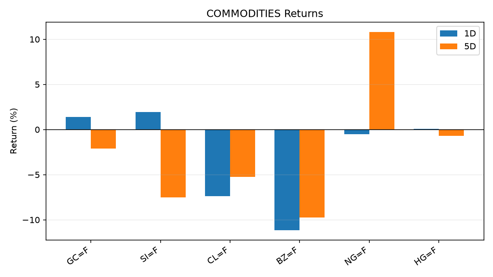
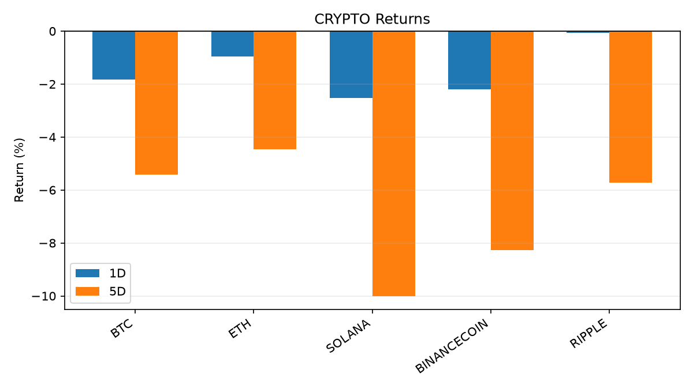
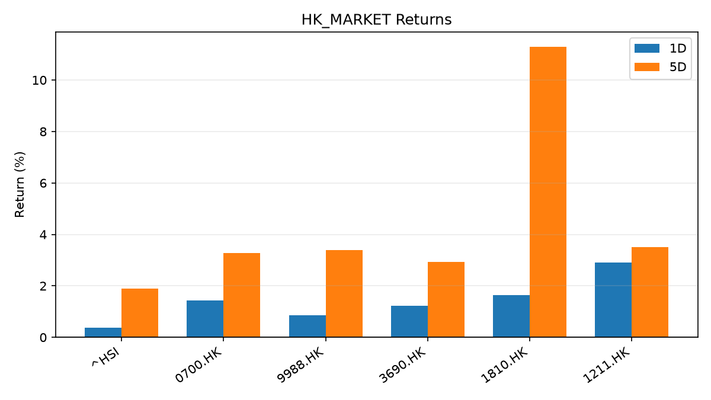
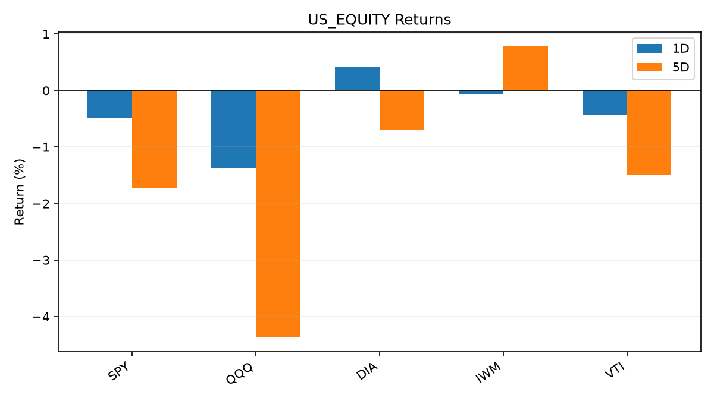
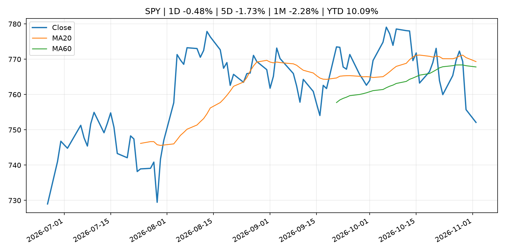
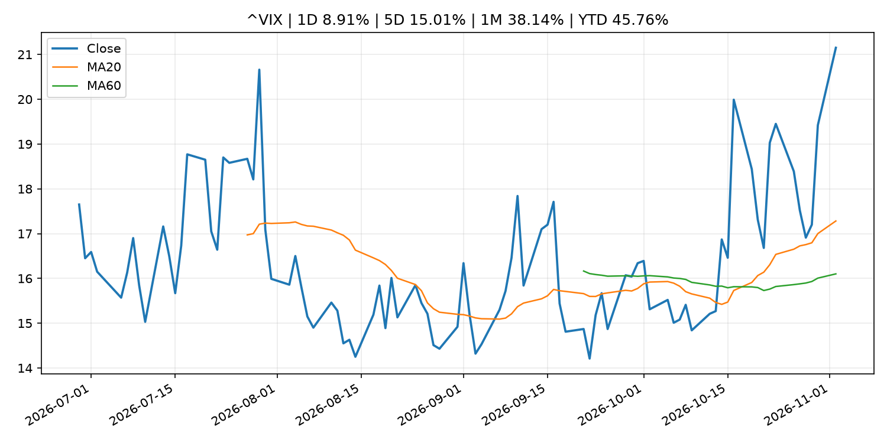
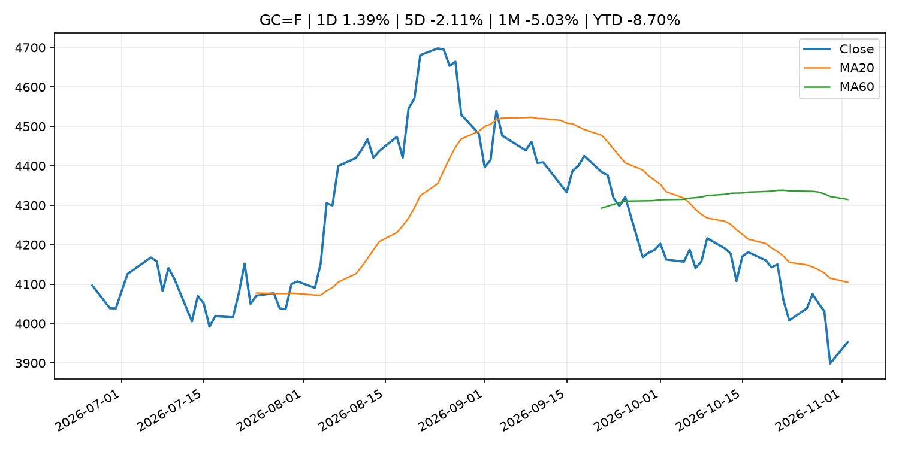
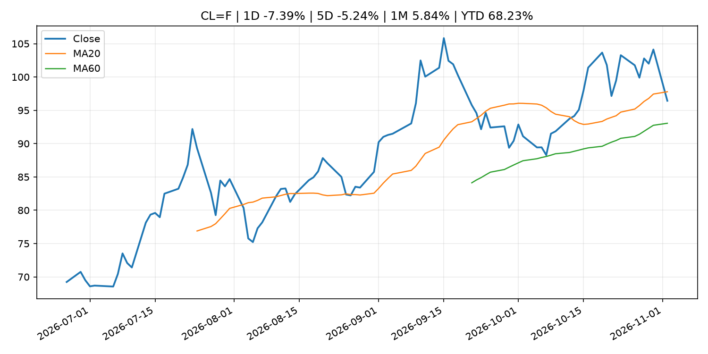
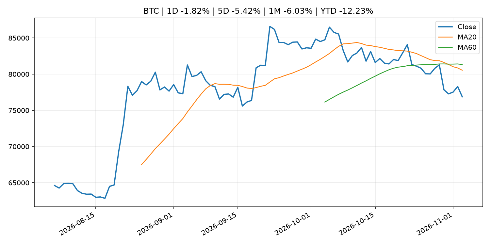
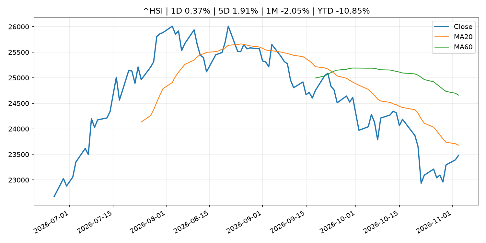

今日主线
Top themes
- crypto_market_structure: XRP Ledger set to fix flaw that could have let stablecoin partners print new tokens
- earnings: Here’s why Palantir’s stock is down despite a ‘bombastic’ quarter
- earnings: The stock market has gone nowhere for the past 5 months. It’s now looking like a bargain.
核心资产
1D snapshot · 2026-11-03
美股 SPY
-0.48%
QQQ
-1.36%
VIX
8.91%
BTC
-1.82%
Gold
1.39%
Oil
-7.39%
异动雷达
按 1D 绝对波动排序 · 2026-11-03
BZ=F
COMMODITIES · range_bound · 104.54
-11.14%
^VIX
US_MACRO_MARKET · strong_uptrend · 21.15
8.91%
CL=F
COMMODITIES · range_bound · 96.43
-7.39%
1211.HK
HK_MARKET · range_bound · 72.50
2.91%
SOLANA
CRYPTO · strong_downtrend · 92.08
-2.53%
BINANCECOIN
CRYPTO · strong_downtrend · 696.29
-2.19%
SI=F
COMMODITIES · strong_downtrend · 50.05
1.94%
BTC
CRYPTO · strong_downtrend · 76,865.57
-1.82%
Must Read
优先阅读
加密市场结构和监管变化会影响 BTC、ETH 及相关股票的风险溢价。
Tier 2
CoinDesk
crypto_market_structure
high
BTC
COIN
ETH
crypto market
大型科技股盈利和资本开支会影响纳指、半导体和 AI 交易主线。
Tier 2
MarketWatch Top Stories
earnings
low
大型科技股盈利和资本开支会影响纳指、半导体和 AI 交易主线。
Tier 2
MarketWatch Top Stories
earnings
low
大型科技股盈利和资本开支会影响纳指、半导体和 AI 交易主线。
Tier 2
MarketWatch Top Stories
earnings
low
图表面板
Summary charts · 2026-11-03

COMMODITIES

CRYPTO

HK_MARKET

US_EQUITY
Global Macro Morning Briefing - 2026-11-03
Not financial advice / 非投资建议。
0. 今日总览
- 市场状态：risk_off。股指回落、VIX 抬升且避险资产走强，市场偏风险规避。
- 今日三大主线：
- crypto_market_structure: XRP Ledger set to fix flaw that could have let stablecoin partners print new tokens
- earnings: Here’s why Palantir’s stock is down despite a ‘bombastic’ quarter
- earnings: The stock market has gone nowhere for the past 5 months. It’s now looking like a bargain.
- 一句话结论：今日晨报重点关注：加密市场结构和监管变化会影响 BTC、ETH 及相关股票的风险溢价。；大型科技股盈利和资本开支会影响纳指、半导体和 AI 交易主线。。跨资产方面，SPY 1D -0.48%；QQQ 1D -1.36%；^VIX 1D 8.91%；TLT 1D -0.13%；GC=F 1D 1.39%；CL=F 1D -7.39%；BTC 1D -1.82%；ETH 1D -0.96%；股指回落、VIX 抬升且避险资产走强，市场偏风险规避。政策、通胀、利率、美元、美债、能源和加密监管仍是主要观察线索。所有结论仅基于公开数据与短摘要整理，不构成投资建议。
1. 隔夜跨资产市场
- 美股：SPY 1D -0.48%，QQQ 1D -1.36%，整体趋势需结合 VIX 和利率确认。
- 美债/美元：TLT 1D -0.13%，美元指数 1D -0.06%，是判断折现率压力的核心线索。
- 黄金/原油：黄金 1D 1.39%，原油 1D -7.39%，用于观察避险、通胀和地缘风险。
- 加密：BTC 1D -1.82%，ETH 1D -0.96%，关注是否独立于纳指走出加密自身行情。
- 港股/A股：恒生 1D 0.37%，沪深300/上证 1D n/a，重点看中国政策预期与人民币线索。
- 风险观察：关注避险是否演变为信用或流动性压力。
US_EQUITY
| symbol |
latest close |
1D |
5D |
1M |
YTD |
trend |
| SPY |
752.10 |
-0.48% |
-1.73% |
-2.28% |
10.09% |
range_bound |
| QQQ |
681.09 |
-1.36% |
-4.37% |
-9.14% |
11.09% |
range_bound |
| DIA |
519.34 |
0.43% |
-0.69% |
1.61% |
7.38% |
downtrend |
| IWM |
279.14 |
-0.07% |
0.78% |
-0.85% |
12.20% |
range_bound |
| VTI |
370.00 |
-0.42% |
-1.49% |
-2.11% |
10.02% |
downtrend |
US_MACRO_MARKET
| symbol |
latest close |
1D |
5D |
1M |
YTD |
trend |
| ^VIX |
21.15 |
8.91% |
15.01% |
38.14% |
45.76% |
strong_uptrend |
| DX-Y.NYB |
101.82 |
-0.06% |
-0.14% |
-0.11% |
3.45% |
range_bound |
| TLT |
81.73 |
-0.13% |
0.06% |
5.49% |
-6.09% |
range_bound |
| IEF |
91.50 |
-0.28% |
0.42% |
2.75% |
-4.77% |
range_bound |
COMMODITIES
| symbol |
latest close |
1D |
5D |
1M |
YTD |
trend |
| GC=F |
3,953.10 |
1.39% |
-2.11% |
-5.03% |
-8.70% |
strong_downtrend |
| SI=F |
50.05 |
1.94% |
-7.50% |
-16.55% |
-29.06% |
strong_downtrend |
| CL=F |
96.43 |
-7.39% |
-5.24% |
5.84% |
68.23% |
range_bound |
| BZ=F |
104.54 |
-11.14% |
-9.73% |
2.24% |
72.08% |
range_bound |
| NG=F |
2.88 |
-0.52% |
10.80% |
-5.01% |
-20.32% |
range_bound |
| HG=F |
6.46 |
0.08% |
-0.68% |
-0.44% |
14.60% |
downtrend |
HK_MARKET
| symbol |
latest close |
1D |
5D |
1M |
YTD |
trend |
| ^HSI |
23,480.31 |
0.37% |
1.91% |
-2.05% |
-10.85% |
downtrend |
| 0700.HK |
397.80 |
1.43% |
3.27% |
-5.56% |
-36.15% |
strong_downtrend |
| 9988.HK |
100.30 |
0.85% |
3.40% |
-3.93% |
-32.68% |
strong_downtrend |
| 3690.HK |
73.95 |
1.23% |
2.92% |
5.34% |
-29.30% |
range_bound |
| 1810.HK |
28.56 |
1.64% |
11.30% |
17.82% |
-29.10% |
range_bound |
| 1211.HK |
72.50 |
2.91% |
3.50% |
-1.89% |
-26.58% |
range_bound |
CRYPTO
| symbol |
latest close |
1D |
5D |
1M |
YTD |
trend |
| BTC |
76,865.57 |
-1.82% |
-5.42% |
-6.03% |
-12.23% |
strong_downtrend |
| ETH |
2,252.06 |
-0.96% |
-4.47% |
-7.92% |
-24.17% |
strong_downtrend |
| SOLANA |
92.08 |
-2.53% |
-10.00% |
-12.83% |
-26.05% |
strong_downtrend |
| BINANCECOIN |
696.29 |
-2.19% |
-8.27% |
-4.92% |
-19.29% |
strong_downtrend |
| RIPPLE |
1.25 |
-0.07% |
-5.72% |
-6.87% |
-32.15% |
strong_downtrend |
2. 今日最重要的 10 条新闻
1. XRP Ledger set to fix flaw that could have let stablecoin partners print new tokens
- 来源：CoinDesk
- 时间：2026-11-02T12:37:24+00:00
- 地区：global
- 事件类型：crypto_market_structure
- 重要性层级：Tier 2
- 一句话摘要：XRP Ledger set to fix flaw that could have let stablecoin partners print new tokens
- 为什么重要：加密市场结构和监管变化会影响 BTC、ETH 及相关股票的风险溢价。
- 可能影响：主要影响 BTC，方向为 mixed，强度 high；加密监管或 ETF 进展会改变 BTC 的资金流和风险溢价。
- 资产：BTC
方向：mixed
强度：high
原因：加密监管或 ETF 进展会改变 BTC 的资金流和风险溢价。
- 资产：ETH
方向：mixed
强度：high
原因：监管框架会影响 ETH 产品化和机构参与度。
- 资产：COIN
方向：mixed
强度：medium
原因：监管清晰度和执法风险会影响交易平台估值。
- 资产：crypto market
方向：mixed
强度：high
原因：信息影响整个加密市场结构，但方向取决于细节。
- 原文链接：https://www.coindesk.com/tech/2026/11/02/xrp-ledger-set-to-fix-flaw-that-could-let-stablecoin-partners-print-new-tokens
2. Here’s why Palantir’s stock is down despite a ‘bombastic’ quarter
3. The stock market has gone nowhere for the past 5 months. It’s now looking like a bargain.
4. Palantir earnings reveal a major AI turning point
5. Coinbase downgraded at Morgan Stanley; price target slashed 53% on weak earnings outlook
6. Traders rushing into a leveraged ETF to make a bullish bet on the Nasdaq-100 just got burned
7. Bitcoin traders eye post-election rally as exchange outflows point to supply squeeze
3. 政策与央行观察
1. XRP Ledger set to fix flaw that could have let stablecoin partners print new tokens
- 来源：CoinDesk
- 时间：2026-11-02T12:37:24+00:00
- 地区：global
- 事件类型：crypto_market_structure
- 重要性层级：Tier 2
- 一句话摘要：XRP Ledger set to fix flaw that could have let stablecoin partners print new tokens
- 为什么重要：加密市场结构和监管变化会影响 BTC、ETH 及相关股票的风险溢价。
- 可能影响：主要影响 BTC，方向为 mixed，强度 high；加密监管或 ETF 进展会改变 BTC 的资金流和风险溢价。
- 资产：BTC
方向：mixed
强度：high
原因：加密监管或 ETF 进展会改变 BTC 的资金流和风险溢价。
- 资产：ETH
方向：mixed
强度：high
原因：监管框架会影响 ETH 产品化和机构参与度。
- 资产：COIN
方向：mixed
强度：medium
原因：监管清晰度和执法风险会影响交易平台估值。
- 资产：crypto market
方向：mixed
强度：high
原因：信息影响整个加密市场结构，但方向取决于细节。
- 原文链接：https://www.coindesk.com/tech/2026/11/02/xrp-ledger-set-to-fix-flaw-that-could-let-stablecoin-partners-print-new-tokens
4. 市场异动与图表
- SPY 下跌 -0.48%
- QQQ 下跌 -1.36%
- VIX 上涨 8.91%
- Gold 上涨 1.39%
- Oil 下跌 -7.39%
SPY

QQQ

^VIX

TLT

GC=F

CL=F

BTC

ETH

^HSI

5. 华尔街与机构公开观点
6. 今日重点关注
- 经济数据：经济数据：暂无可靠公开日历数据；如配置经济日历源后可自动填充。
- 央行讲话：央行讲话：暂无可靠公开日历数据；重点跟踪 Fed、ECB、BoJ、PBOC 官网 RSS。
- 财报：财报：暂无可靠数据。
- 政策事件：政策事件：暂无可靠数据。
- 风险提醒：风险提醒：关注数据源失败项、突发地缘风险、利率和美元的二阶反应。
7. 英文金融表达与宏观概念
- risk-off：避险模式，资金偏向美元、国债、黄金等防御资产。 例句：A geopolitical shock can push markets into risk-off mode.
- market structure：市场结构，指交易、托管、清算、ETF、监管等制度安排。 例句：Crypto market structure rules can affect institutional participation.
- inflation expectations：通胀预期，指家庭、企业或市场对未来通胀的预估。 例句：Inflation expectations can shape wage bargaining and bond yields.
- real yield：实际收益率，名义利率扣除通胀预期后的收益率。 例句：Gold often reacts more to real yields than nominal yields.
- terminal rate：终端利率，市场预期本轮加息周期的最高政策利率。 例句：A higher terminal rate can pressure growth stocks.
- soft landing：软着陆，指通胀回落而经济避免明显衰退。 例句：Markets often rally when data support a soft landing.
8. 背景材料
- Traders rushing into a leveraged ETF to make a bullish bet on the Nasdaq-100 just got burned（MarketWatch Top Stories，other）：Some investors appeared a little too eager to buy the dip in technology stocks last month.
- Bitcoin traders eye post-election rally as exchange outflows point to supply squeeze（CoinDesk，other）：Bitcoin traders eye post-election rally as exchange outflows point to supply squeeze
- Brazil’s Mercado Bitcoin halts withdrawals after $40 million drained across 10 chains（CoinDesk，other）：Brazil’s Mercado Bitcoin halts withdrawals after $40 million drained across 10 chains
- Standard Chartered debuts tokenized deposits in Hong Kong for corporate clients（CoinDesk，other）：Standard Chartered debuts tokenized deposits in Hong Kong for corporate clients
- Bitcoin's 'volatility curve' has a midterm bump（CoinDesk，other）：Bitcoin's 'volatility curve' has a midterm bump
- Bitcoin eases to $77,900 as Binance customers pull $3.6 billion after withdrawals reopen（CoinDesk，other）：Bitcoin eases to $77,900 as Binance customers pull $3.6 billion after withdrawals reopen
- Boris Vujčić: Integrated, open and resilient: Europe’s strengths in a fragmenting world（ECB Press Releases，other）：Boris Vujčić: Integrated, open and resilient: Europe’s strengths in a fragmenting world
- Live updates: Bitcoin bounce fades as Binance exploit, AI unwind continue to weigh（CoinDesk，other）：Live updates: Bitcoin bounce fades as Binance exploit, AI unwind continue to weigh
- Bitcoin ETFs lost $643 million in outflows Friday, and 2026 is barely green now（CoinDesk，other）：Bitcoin ETFs lost $643 million in outflows Friday, and 2026 is barely green now
- Strangers are begging the Binance hacker for bitcoin, one ‘help me bro’ at a time（CoinDesk，other）：Strangers are begging the Binance hacker for bitcoin, one ‘help me bro’ at a time
- Outlook for Economic Activity and Prices (October 2026, full text)（Bank of Japan Announcements，other）：Outlook for Economic Activity and Prices (October 2026, full text)
- Bitcoin claws back toward $79,000 as markets shake off crypto's biggest hack（CoinDesk，other）：Bitcoin claws back toward $79,000 as markets shake off crypto's biggest hack
- BTCPay, a bitcoin payment tool, tells users to switch off their servers after reports of drained wallets（CoinDesk，other）：BTCPay, a bitcoin payment tool, tells users to switch off their servers after reports of drained wallets
- Sources of Changes in Current Account Balances and Market Operations (Oct.)（Bank of Japan Announcements，other）：Sources of Changes in Current Account Balances and Market Operations (Oct.)
9. 数据源、失败项与免责声明
- 采集时间：2026-11-03T03:19:31
- 数据源：公开 RSS、Yahoo Finance、CoinGecko、AKShare、FRED、SEC data.sec.gov，以及用户自有 inputs/reports 文件。
- 合规说明：不绕过 WSJ、Bloomberg、FT、Reuters 等付费墙；对付费媒体只使用公开 RSS 标题、摘要、链接和发布时间。
- 免责声明：Not financial advice / 非投资建议。本项目仅供个人学习、研究和信息整理，不构成投资建议、交易建议或任何收益承诺。
- 失败或跳过的数据源：
- crypto data failed coin=dogecoin
- China market data failed symbol=上证指数: empty dataframe
- China market data failed symbol=深证成指: empty dataframe
- China market data failed symbol=创业板指: empty dataframe
- China market data failed symbol=沪深300: empty dataframe
- China market data failed symbol=中证500: empty dataframe
- China market data failed symbol=科创50: empty dataframe
- FRED_API_KEY not set; skipping FRED macro series
- SEC failed cik=0000320193
- SEC failed cik=0000789019
- SEC failed cik=0001045810
- SEC failed cik=0001318605
- SEC failed cik=0001577552